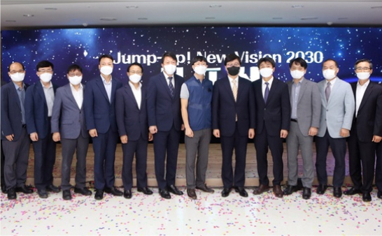
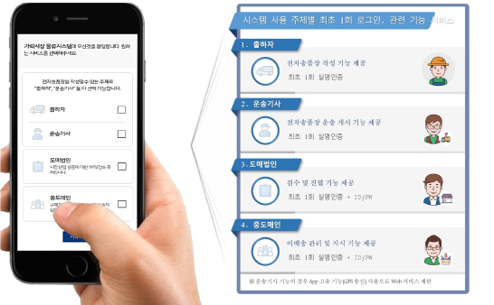
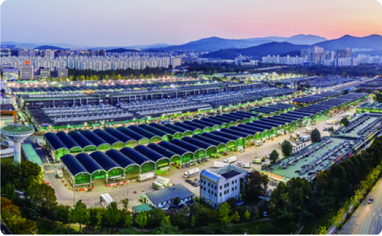
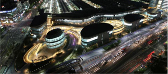
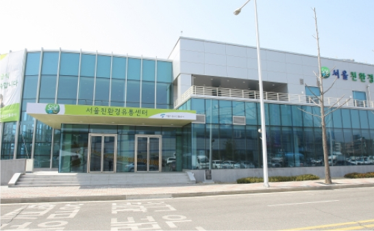
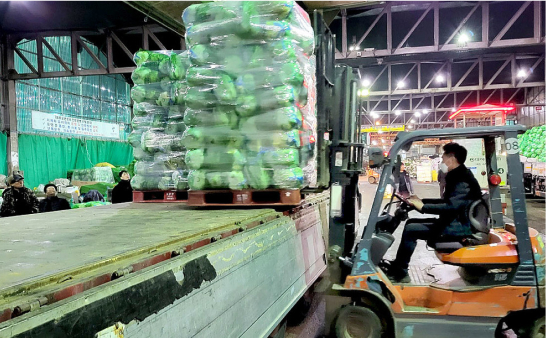
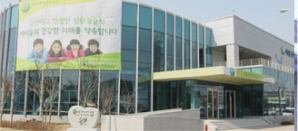
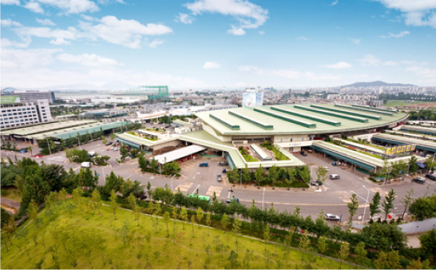
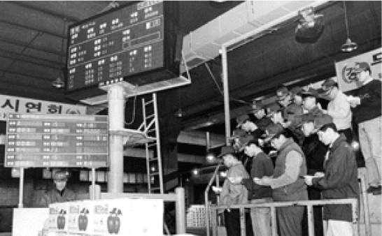
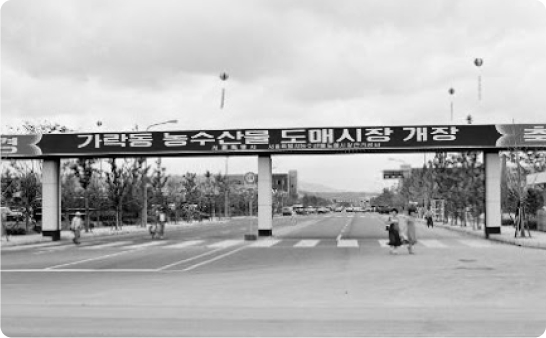

Digital Transformation (DX) for the establishment of a future-oriented
wholesale market, focusing on smart logistics and digital innovation.

2020 ~ 2022
June 11, 2020Designated as a 'certification body' by the National Agricultural Products
Quality Management Service (Garak Market Safety Inspection Office)
August 22, 2020Certified with ISO 45001 (Occupational Health and Safety Management
System)
February 22, 2021Start of the Garak Market Facility Modernization Project, Phase 1, Section 1
(Vegetable 2)
August 31, 2022Jump up! New Vision 2030 Declaration (Promotion of Public Corporation and
Wholesale Market DX)

Late 2023s
April 2, 2023Launch of packaging and lower market transaction platform (Completion of 11
specialized items for Vegetable 2)
April 11, 2023ESG Management Declaration
July 19, 2023Establishment of Garak Standard MD
September 13, 2023Declaration of the Garak Market Distribution and Logistics Data System DX
Strategy
November 3, 2023Launch of the Big Data-Based BI System (Garak-On)
November 23, 2023Launch of the Garak Market Electronic Delivery Note System
January 2, 2024Launch of the Seoul Ddeundeun Meal Service (Public Meal Service for Childcare
Centers)
May 31, 2024Opening of the Garak Market Water Tower Public Art Park

Late 2024s
2024Full-scale operation of Garak Market’s upgraded wholesale distribution
facilities
2024Establishment of a digital logistics hub in Garak Market.
2024Launch of a comprehensive data-driven distribution system for market
operations.
2024Opening of the new agricultural and fishery logistics complex.
2010
~2019
Renovation of Garak Market and launch of Seoul Public School Meal
Service facilities to enhance the efficiency of agricultural and fishery distribution.


Early 2010s
March 4, 2010Opening of the Seoul Eco-Friendly Economy Distribution Center 1, Launch of
the School Meal Main Project (198 schools)
November 22, 2010Certified with ISO 14001 (Environmental Management System)
June 19, 2011Opening of the Seoul Eco-Friendly Economy Distribution Center 2
June 21, 2011Commencement of Phase 1 of the Garak Market Modernization Project (Garak
Mall)
November 9, 2012Renaming of the corporation(Seoul Agricultural and Marine Products
Corporation)
April 25, 2013Designated as a "Safety Inspection Institution" by the National Agricultural
Products Quality Management Service (Garak Market Safety Inspection Office)

Late 2010s
March 29, 2015Opening of the Seoul Eco-Friendly Economy Distribution Center 3
February 6, 2015Completion of Phase 1 of the Garak Market Modernization Project (Garak
Mall)
July 1, 2016Opening of Garak Mall
April 1, 2018Product and vehicle-loaded trade items
September 11, 2019Approval for the feasibility reassessment of the Garak Market Modernization
Project
2000
~2009
Opening of the Gangseo Agro-Fishery Wholesale Market and promotion of
school meal service facilities in Seoul.


Early 2000s
October 20, 2002Groundbreaking for the Market-Wholesaler System Market at the Southwest
Wholesale Market
October 20, 2002Completion of the Auction System Market at the Southwest Wholesale
Market
February 14, 2003Official naming of the Gangseo Agricultural Wholesale Market
February 25, 2004Opening of the Auction System Market at the Gangseo Agricultural Wholesale
Market
June 14, 2004Opening of the Market-Wholesaler System Market at the Gangseo Agricultural
Wholesale Market

Late 2000s
April 3, 2008Joined the World Union of Wholesale Markets (WUWM)
October 1, 2008Received the Best Community Support Award from the World Union of Wholesale
Markets
March 2, 2009Implementation of the Seoul Eco-Friendly Agricultural Products School Meal
Pilot Project (25 schools)
1984
~1999
Establishment of Seoul Agro-Fisheries & Food Corporation and opening of Garak Market to
improve the distribution of agricultural and fishery products and stabilize market prices.

1980s
April 10, 1984Establishment of the Seoul Agricultural and Marine Products Wholesale Market
Management Corporation
June 19, 1985Opening of the Fruits & Vegetables and Fisheries Markets at the Garak
Agricultural and Marine Products Wholesale Market
August 1985Start of auction-based trading at Garak Market
May 15, 1988Garak-dong Direct Sales Market Opens
1990s
August 3, 1992Take over & Operation of Yanggok market
December 31, 1997Commencement of construction for the Southwest Agricultural and Marine
Products Wholesale Market
February 16, 1998Acquisition and management of the Garak-dong Livestock Market by the
National Agricultural Cooperative Federation (NongHyup)
February 24, 1998Introduction of electronic auction systems
September 9, 1999Corporation name changed (Seoul Agricultural and Marine Products Corporation)